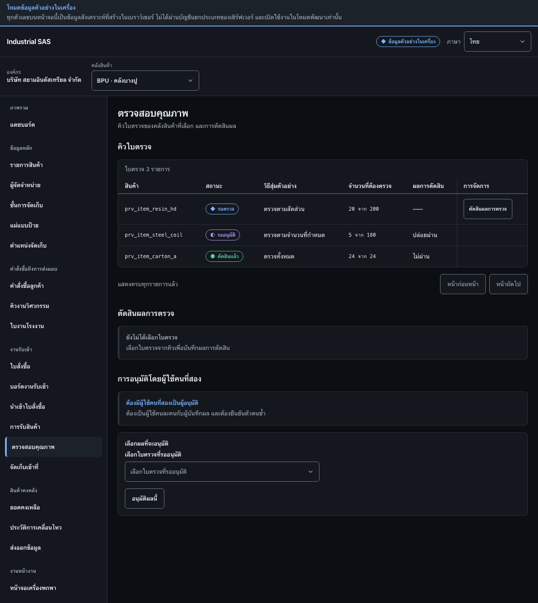

ตัดสินผลการตรวจสอบคุณภาพDecide a quality inspection
บันทึกผลการตรวจและการตัดสิน แล้วให้ผู้ใช้คนที่สองอนุมัติผลนั้นRecord the inspection result and disposition, then have a second user approve it.
สิ่งที่ต้องมีก่อนเริ่มBefore you start
- มีใบตรวจที่เปิดอยู่จากการรับสินค้าAn open inspection created by receiving
- มีผู้ใช้คนที่สองที่มีสิทธิ์อนุมัติA second user with approval permission is available

ขั้นตอนSteps
- ที่กรอบ 1 ตรวจสอบสินค้า สถานะ วิธีสุ่มตัวอย่าง และจำนวนที่ต้องตรวจ จากนั้นกด “ตัดสินผลการตรวจ” ในรายการที่เปิดอยู่In box 1, check the item, status, sampling method, and quantity to inspect, then press “Decide inspection” on the open row.
- บันทึกผลตรวจและผลการตัดสิน เช่น ปล่อยผ่าน กักกัน หรือไม่ผ่านRecord the result and the disposition: release, quarantine, or reject.
- ที่กรอบ 3 ผู้ใช้คนที่สองเลือกใบตรวจที่รออนุมัติ แล้วกด “อนุมัติผลนี้”In box 3, a second user selects the inspection awaiting approval and presses “Approve this decision”.
ตรวจว่างานสำเร็จอย่างไรHow to tell it worked
- สถานะเปลี่ยนจาก “รอตรวจ” หรือ “รออนุมัติ” เป็น “ตัดสินแล้ว”The status moves from “Awaiting inspection” or “Awaiting approval” to “Decided”.
- ผู้บันทึกผลและผู้อนุมัติเป็นคนละผู้ใช้The recording user and the approving user are different people.